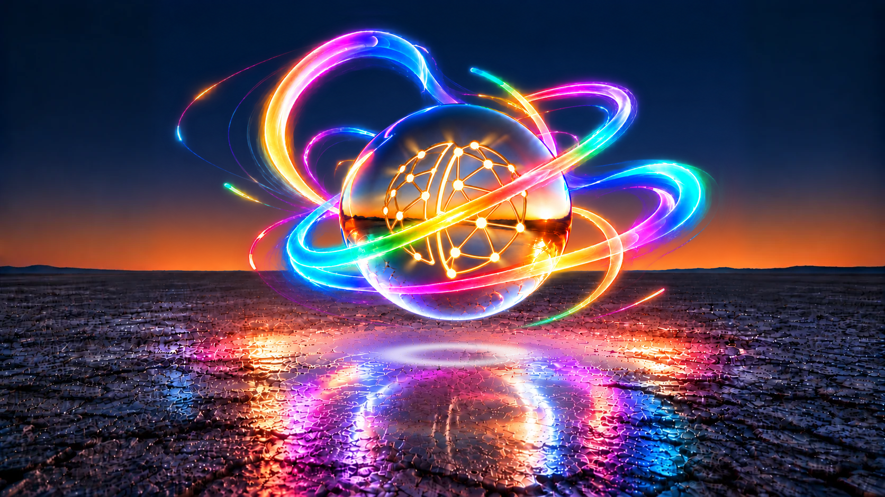
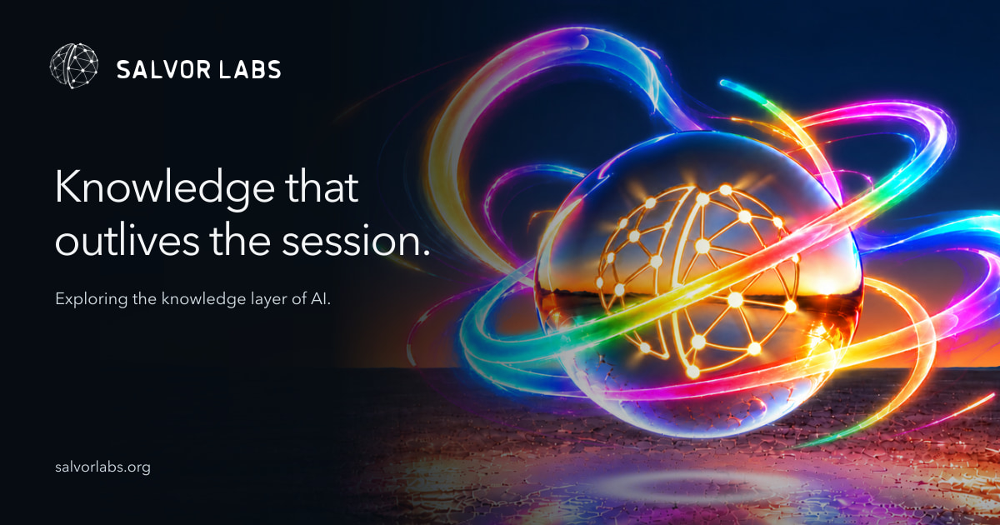
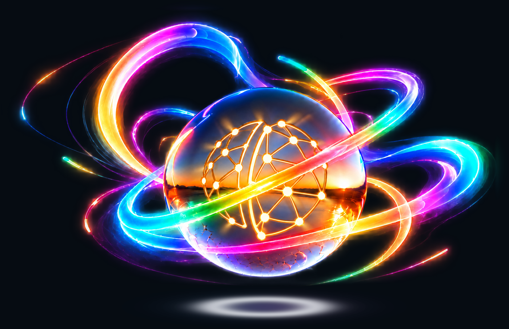
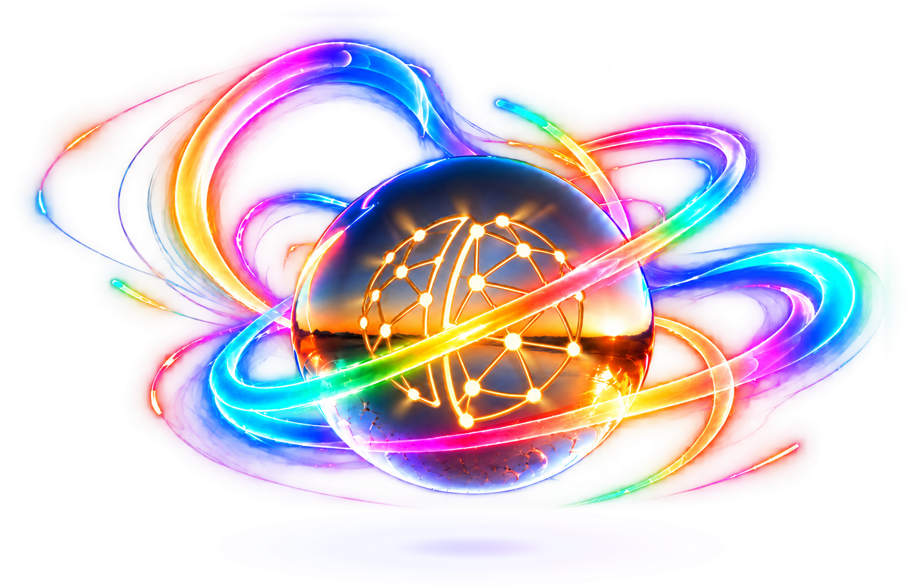

Canonical hero and sharing assets
The approved contained-glow artwork now supplies the main hero and sharing card.
Open the website · Download canonical PNG · 4096×2654

Hero

Sharing card · 1200×630

Reduced card preview
Transparent artwork on dark and white

